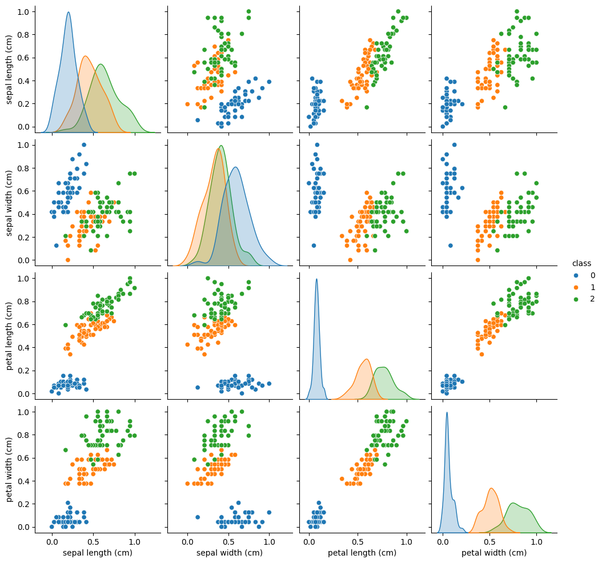
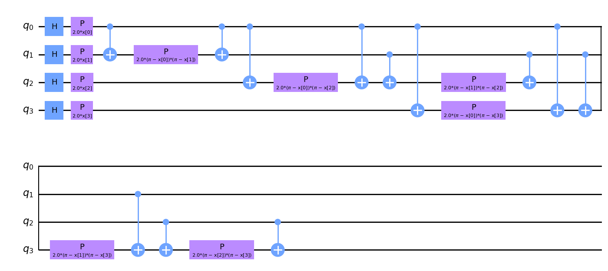
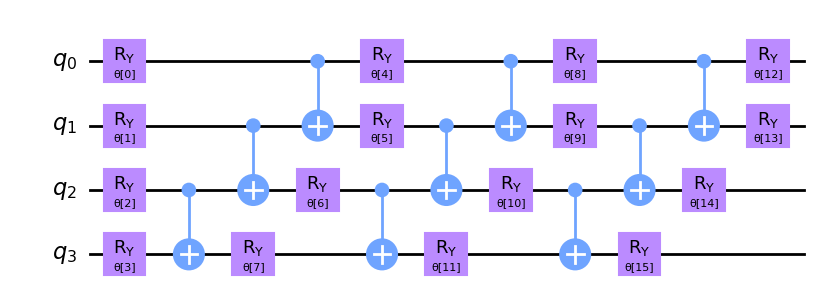
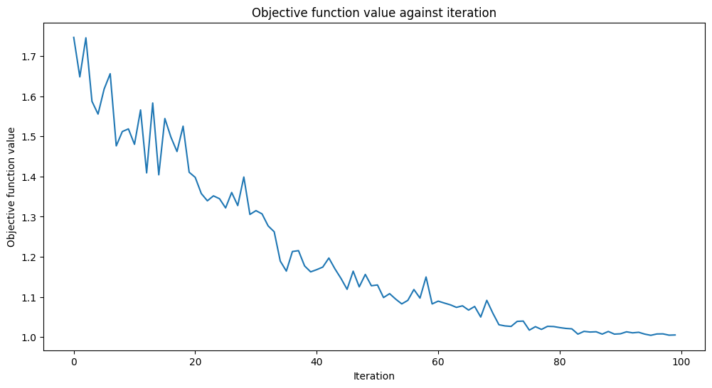

from sklearn.datasets import load_iris
iris = load_iris()Kwantowy model klasyfikatora wariacyjnego
Załadowanie danych
print(iris.DESCR).. _iris_dataset:
Iris plants dataset
--------------------
**Data Set Characteristics:**
:Number of Instances: 150 (50 in each of three classes)
:Number of Attributes: 4 numeric, predictive attributes and the class
:Attribute Information:
- sepal length in cm
- sepal width in cm
- petal length in cm
- petal width in cm
- class:
- Iris-Setosa
- Iris-Versicolour
- Iris-Virginica
:Summary Statistics:
============== ==== ==== ======= ===== ====================
Min Max Mean SD Class Correlation
============== ==== ==== ======= ===== ====================
sepal length: 4.3 7.9 5.84 0.83 0.7826
sepal width: 2.0 4.4 3.05 0.43 -0.4194
petal length: 1.0 6.9 3.76 1.76 0.9490 (high!)
petal width: 0.1 2.5 1.20 0.76 0.9565 (high!)
============== ==== ==== ======= ===== ====================
:Missing Attribute Values: None
:Class Distribution: 33.3% for each of 3 classes.
:Creator: R.A. Fisher
:Donor: Michael Marshall (MARSHALL%PLU@io.arc.nasa.gov)
:Date: July, 1988
The famous Iris database, first used by Sir R.A. Fisher. The dataset is taken
from Fisher's paper. Note that it's the same as in R, but not as in the UCI
Machine Learning Repository, which has two wrong data points.
This is perhaps the best known database to be found in the
pattern recognition literature. Fisher's paper is a classic in the field and
is referenced frequently to this day. (See Duda & Hart, for example.) The
data set contains 3 classes of 50 instances each, where each class refers to a
type of iris plant. One class is linearly separable from the other 2; the
latter are NOT linearly separable from each other.
|details-start|
**References**
|details-split|
- Fisher, R.A. "The use of multiple measurements in taxonomic problems"
Annual Eugenics, 7, Part II, 179-188 (1936); also in "Contributions to
Mathematical Statistics" (John Wiley, NY, 1950).
- Duda, R.O., & Hart, P.E. (1973) Pattern Classification and Scene Analysis.
(Q327.D83) John Wiley & Sons. ISBN 0-471-22361-1. See page 218.
- Dasarathy, B.V. (1980) "Nosing Around the Neighborhood: A New System
Structure and Classification Rule for Recognition in Partially Exposed
Environments". IEEE Transactions on Pattern Analysis and Machine
Intelligence, Vol. PAMI-2, No. 1, 67-71.
- Gates, G.W. (1972) "The Reduced Nearest Neighbor Rule". IEEE Transactions
on Information Theory, May 1972, 431-433.
- See also: 1988 MLC Proceedings, 54-64. Cheeseman et al"s AUTOCLASS II
conceptual clustering system finds 3 classes in the data.
- Many, many more ...
|details-end|features = iris.data
labels = iris.targetNormalizacja
Zastosujemy prostą transformację aby przedstawić wszystkie zmienne w tej samej skali. Zamienimy wszystkie zmienne do skali \(\left[ 0,1 \right]\). Normalizacja danych to technika uczenia maszynowego przetworzenia danych pozwalająca na (często) lepszą i szybszą zbiezność algorytmów.
from sklearn.preprocessing import MinMaxScaler
features = MinMaxScaler().fit_transform(features)import pandas as pd
import numpy as np
import seaborn as sns
df = pd.DataFrame(features, columns=iris.feature_names)
df['class'] = pd.Series(iris.target)
df.head()| sepal length (cm) | sepal width (cm) | petal length (cm) | petal width (cm) | class | |
|---|---|---|---|---|---|
| 0 | 0.222222 | 0.625000 | 0.067797 | 0.041667 | 0 |
| 1 | 0.166667 | 0.416667 | 0.067797 | 0.041667 | 0 |
| 2 | 0.111111 | 0.500000 | 0.050847 | 0.041667 | 0 |
| 3 | 0.083333 | 0.458333 | 0.084746 | 0.041667 | 0 |
| 4 | 0.194444 | 0.666667 | 0.067797 | 0.041667 | 0 |
sns.pairplot(df, hue="class", palette="tab10")
Z otrzymanego wykresu łatwo zauwazyć iz klasa 0 jest dobrze separowalna szczególnie dla zmiennej sepal width.
Klasyczny model SVC
from sklearn.model_selection import train_test_split
from qiskit_algorithms.utils import algorithm_globals
algorithm_globals.random_seed = 123
train_features, test_features, train_labels, test_labels = train_test_split(
features, labels, train_size=0.8, random_state=algorithm_globals.random_seed
)
from sklearn.svm import SVC
svc = SVC()
_ = svc.fit(train_features, train_labels)
train_score_c4 = svc.score(train_features, train_labels)
test_score_c4 = svc.score(test_features, test_labels)
print(f"Classical SVC on the training dataset: {train_score_c4:.2f}")
print(f"Classical SVC on the test dataset: {test_score_c4:.2f}")Classical SVC on the training dataset: 0.99
Classical SVC on the test dataset: 0.97Kodowanie danych - ZZFeatureMap
from qiskit.circuit.library import ZZFeatureMap
num_features = features.shape[1]
feature_map = ZZFeatureMap(feature_dimension=num_features, reps=1)
feature_map.decompose().draw(output="mpl", fold=20)
Przyjrzyj się uwaznie i zobacz, ze obwód ten jest parametryzowany przez cztery zmienne \(x \left[ 0 \right],\ldots x\left[3\right]\).
Wybór modelu - RealAmplitudes
from qiskit.circuit.library import RealAmplitudes
ansatz = RealAmplitudes(num_qubits=num_features, reps=3)
ansatz.decompose().draw(output="mpl", fold=20)
Wybór optymalizatora COBYLA
from qiskit_algorithms.optimizers import COBYLA
optimizer = COBYLA(maxiter=100)from qiskit.primitives import Sampler
sampler = Sampler()Zdefiniujmy dodatkową funkcję pozwalającą przeglądać postęp uczenia modelu.
from matplotlib import pyplot as plt
from IPython.display import clear_output
objective_func_vals = []
plt.rcParams["figure.figsize"] = (12, 6)
def callback_graph(weights, obj_func_eval):
clear_output(wait=True)
objective_func_vals.append(obj_func_eval)
plt.title("Objective function value against iteration")
plt.xlabel("Iteration")
plt.ylabel("Objective function value")
plt.plot(range(len(objective_func_vals)), objective_func_vals)
plt.show()Variational Quantum Classifier
import time
from qiskit_machine_learning.algorithms.classifiers import VQC
vqc = VQC(
sampler=sampler,
feature_map=feature_map,
ansatz=ansatz,
optimizer=optimizer,
callback=callback_graph,
)
# clear objective value history
objective_func_vals = []
start = time.time()
vqc.fit(train_features, train_labels)
elapsed = time.time() - start
print(f"Training time: {round(elapsed)} seconds")
Training time: 37 secondstrain_score_q4 = vqc.score(train_features, train_labels)
test_score_q4 = vqc.score(test_features, test_labels)
print(f"Quantum VQC on the training dataset: {train_score_q4:.2f}")
print(f"Quantum VQC on the test dataset: {test_score_q4:.2f}")Quantum VQC on the training dataset: 0.85
Quantum VQC on the test dataset: 0.87